はじめに
Autonomous Databaseでは、パブリック・エンドポイントとプライベート・エンドポイントを選択できます。 プライベート・エンドポイントの場合は指定したVCN内のサブネット上にエンドポイントを配置することができます。 アクセス制御は指定したVCNのサブネットのセキュリティ・リスト、もしくはネットワーク・セキュリティ・グループ(NSG)を利用して行います。
目次
所要時間 : 約30分
1. プライベート・エンドポイントのADBへの接続
1-1. ネットワーク構成の確認
プライベート・エンドポイントのAutonomous Database への接続方法は、IPsec VPN やFastConnect からアクセスする方法が一般的ですが、本章ではインターネットからの接続方法をご紹介します。
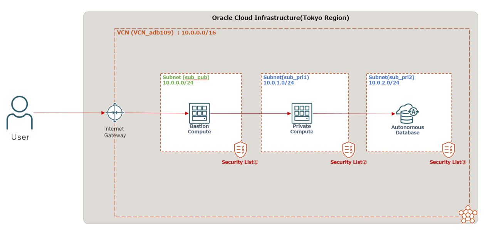
ネットワーク構成は上記のようにしています。各Security List の設定を以下に示します。
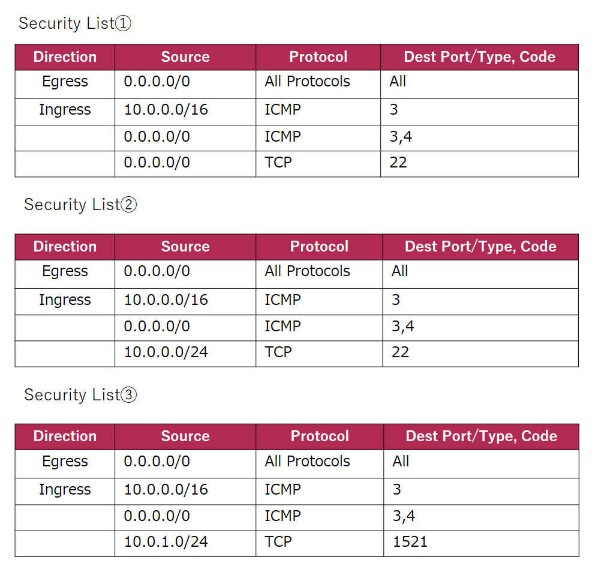
プライベート・サブネットsub_pri1は、パブリック・サブネットsub_pubからのSSHのみ許可、sub_pri2は、sub_pri1からのTCP接続(1521ポート)のみ許可しています。 本章では、パブリック・サブネットに踏み台サーバーを置いて利用しますが、インターネット側からアクセスする場合には、Bastionサービスも利用できます。
1-2. ADBの作成
プライベート・エンドポイントのADBを作成するには、ADBの作成ページの[ネットワーク・アクセスの選択]でプライベート・エンドポイント・アクセスのみを選択します。 以下の画像のようにADBを配置する仮想クラウド・ネットワークとサブネットを指定します。
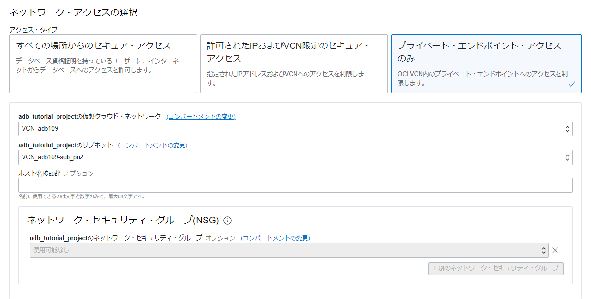
なお、VCNのセキュリティ・リストのルールによるアクセス制御が設定されている場合、ネットワーク・セキュリティ・グループによるアクセス制御はオプションになります。
1-3. ADBへの接続
パブリック・サブネットの踏み台サーバー経由でプライベート・サブネットのコンピュート・インスタンスに接続します。 プライベート・エンドポイント・アクセスのみの場合は、ウォレットなし接続が可能です。 ウォレットなし接続の手順については、こちらをご参照ください。 もちろんウォレットを使用した接続も可能です。
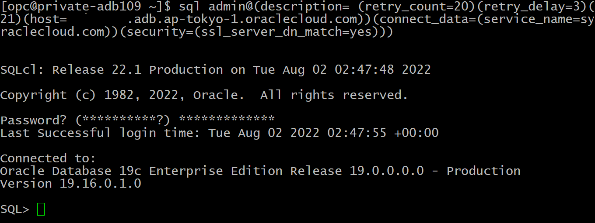
1-4. パブリック・アクセスの許可
プライベート・エンドポイントのADBでは、パブリック・アクセスを許可するオプションがあります。このオプションを使用すると、パブリック・エンドポイントが追加され、アクセス制御リストで許可されたパブリックIP、CIDR、VCNから接続することができるようになります。
プライベート・エンドポイントで作成済みのADBにパブリック・アクセスを許可するには、ADBのネットワーク・アクセスを更新します。
ADBの作成ページの[ネットワーク・アクセスの更新]をクリックします。
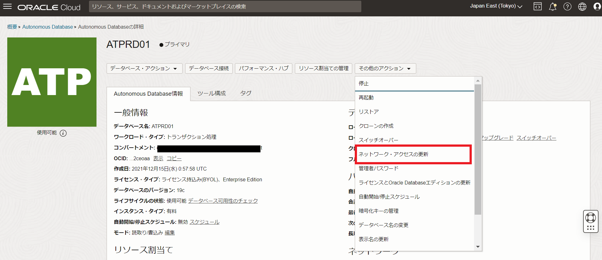
[パブリック・アクセスを許可]ボタンをクリックします。
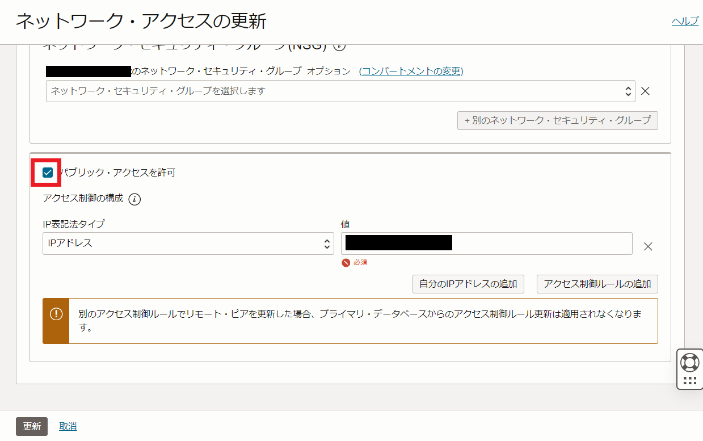
IPアドレス、CIDRブロック、VCN名、VCNのOCIDを指定して、アクセス許可を行います。今回はADBが配置されているVCNとは異なるVCN内にあるコンピュート・インスタンスのパブリックIPを指定します。
このとき接続用のウォレットにパブリック・エンドポイントにアクセスする接続文字列が追加されるので、確認してみます。 ウォレットのダウンロード方法はこちらをご参照ください。
以下にようにDB名_public_コンシューマグループが追加されています。
atprd01_high = (description= (retry_count=20)(retry_delay=3)(address=(protocol=tcps)(port=1522)(host=xxxx.adb.ap-tokyo-1.oraclecloud.com))(connect_data=(service_name=xxxx_atprd01_high.adb.oraclecloud.com))(security=(ssl_server_dn_match=no)))
atprd01_low = (description= (retry_count=20)(retry_delay=3)(address=(protocol=tcps)(port=1522)(host=xxxx.adb.ap-tokyo-1.oraclecloud.com))(connect_data=(service_name=xxxx_atprd01_low.adb.oraclecloud.com))(security=(ssl_server_dn_match=no)))
atprd01_medium = (description= (retry_count=20)(retry_delay=3)(address=(protocol=tcps)(port=1522)(host=xxxx.adb.ap-tokyo-1.oraclecloud.com))(connect_data=(service_name=xxxx_atprd01_medium.adb.oraclecloud.com))(security=(ssl_server_dn_match=no)))
atprd01_tp = (description= (retry_count=20)(retry_delay=3)(address=(protocol=tcps)(port=1522)(host=xxxx.adb.ap-tokyo-1.oraclecloud.com))(connect_data=(service_name=xxxx_atprd01_tp.adb.oraclecloud.com))(security=(ssl_server_dn_match=no)))
atprd01_tpurgent = (description= (retry_count=20)(retry_delay=3)(address=(protocol=tcps)(port=1522)(host=xxxx.adb.ap-tokyo-1.oraclecloud.com))(connect_data=(service_name=xxxx_atprd01_tpurgent.adb.oraclecloud.com))(security=(ssl_server_dn_match=no)))
atprd01_public_high = (description= (retry_count=20)(retry_delay=3)(address=(protocol=tcps)(port=1522)(host=adb.ap-tokyo-1.oraclecloud.com))(connect_data=(service_name=xxxx_atprd01_high.adb.oraclecloud.com))(security=(ssl_server_dn_match=yes)))
atprd01_public_low = (description= (retry_count=20)(retry_delay=3)(address=(protocol=tcps)(port=1522)(host=adb.ap-tokyo-1.oraclecloud.com))(connect_data=(service_name=xxxx_atprd01_low.adb.oraclecloud.com))(security=(ssl_server_dn_match=yes)))
atprd01_public_medium = (description= (retry_count=20)(retry_delay=3)(address=(protocol=tcps)(port=1522)(host=adb.ap-tokyo-1.oraclecloud.com))(connect_data=(service_name=xxxx_atprd01_medium.adb.oraclecloud.com))(security=(ssl_server_dn_match=yes)))
atprd01_public_tp = (description= (retry_count=20)(retry_delay=3)(address=(protocol=tcps)(port=1522)(host=adb.ap-tokyo-1.oraclecloud.com))(connect_data=(service_name=xxxx_atprd01_tp.adb.oraclecloud.com))(security=(ssl_server_dn_match=yes)))
atprd01_public_tpurgent = (description= (retry_count=20)(retry_delay=3)(address=(protocol=tcps)(port=1522)(host=adb.ap-tokyo-1.oraclecloud.com))(connect_data=(service_name=xxxx_atprd01_tpurgent.adb.oraclecloud.com))(security=(ssl_server_dn_match=yes)))
ウォレットを使った接続の場合、上記のように更新されたウォレットを再ダウンロードし、atprd01_public_tpなどの追加された接続サービスで接続すればパブリック・アクセスが可能になります。
ウォレットを使わない接続の場合、OCIコンソールの[データベース接続]をクリックしパブリック・アクセス用の接続文字列を取得します。
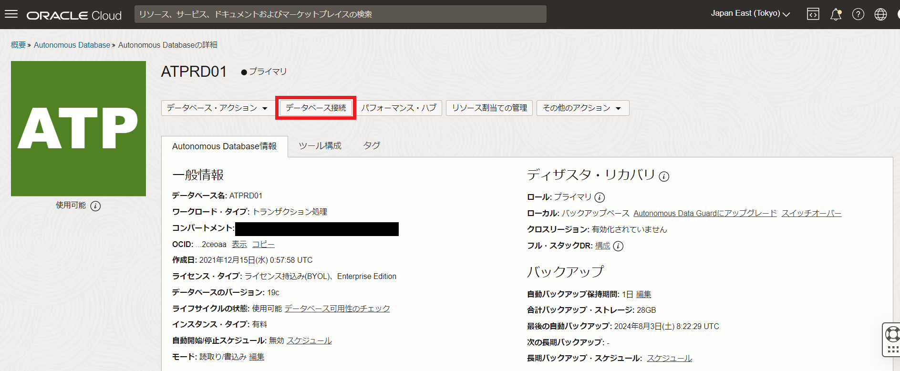
[TLS認証]をTLSとし、[アクセス]をパブリック・エンドポイントとすると、atprd01_public_tpなどの接続サービスの接続文字列が表示されるので、そのうちの1つをコピーします。
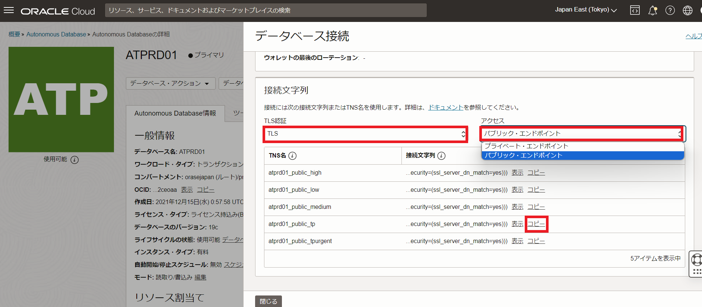
先ほどアクセス許可したパブリックIPのインスタンスから、SQLclで以下のように接続してみます。
sql admin/Welcome12345#@"(description= (retry_count=20)(retry_delay=3)(address=(protocol=tcps)(port=1521)(host=adb.ap-tokyo-1.oraclecloud.com))(connect_data=(service_name=xxxx_atprd01_tp.adb.oraclecloud.com))(security=(ssl_server_dn_match=yes)))"
SQLcl: Release 24.1 Production on Sun Aug 04 06:16:29 2024
Copyright (c) 1982, 2024, Oracle. All rights reserved.
Last Successful login time: Sun Aug 04 2024 06:17:12 +00:00
Connected to:
Oracle Database 19c Enterprise Edition Release 19.0.0.0.0 - Production
Version 19.24.0.1.0
SQL>
無事パブリック・アクセスができました。
2. Database Actionsへの接続
Database Actions は、データベースの操作をGUI上で行うことができるツールです。 ADBのネットワーク構成によって、アクセス方法が異なります。 ネットワーク・アクセス・タイプにすべての場所からのセキュア・アクセス を選択している場合は、特に何も設定せずOCIコンソール画面からアクセスできます。
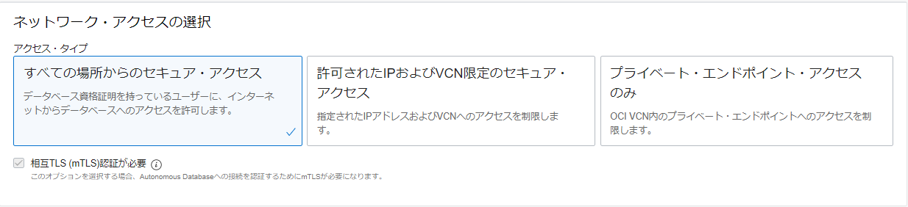
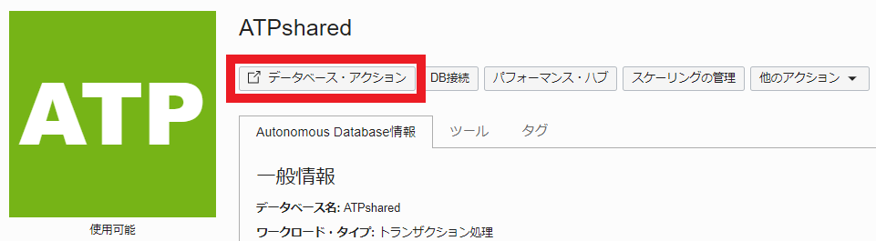
それ以外のパターンについて見ていきます。
2-1. パブリック・エンドポイントでACLを定義済み
まずは、パブリック・エンドポイントでアクセス制御リスト(ACL)を定義している場合です。 [ネットワーク・アクセスの選択]では、許可されたIPおよびVCN限定のセキュア・アクセスを選択します。
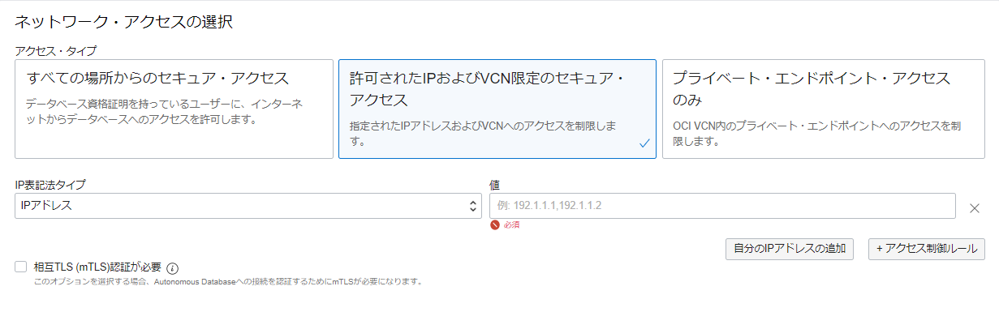
この設定の場合、インターネットからDatabase Actionsにアクセスするためには、自分のIPアドレスを追加する必要があります。
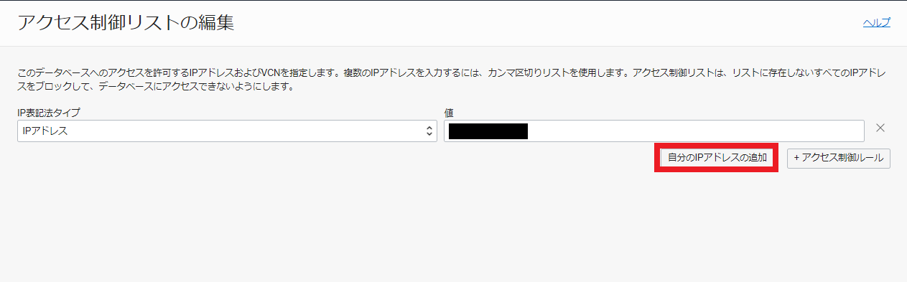
自分のIPアドレスを追加ボタンがあるので、こちらをクリックするとすぐに自分のIPアドレスからのアクセスを許可できます。 ACLを更新後、OCIコンソール画面からアクセスできるようになります。
2-2. プライベート・エンドポイントでInternetから接続
プライベート・エンドポイントで作成しているADBは、OCIコンソールの[データベース・アクション]をクリックすると以下のような表示が出ます。
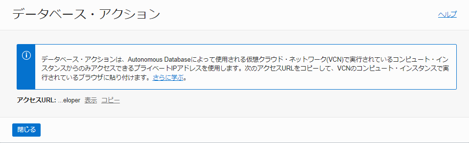
インターネットからアクセスする場合は、上の画像の記載のように、VCN内にコンピュート・インスタンスを1台置きそちらのブラウザを使用するようにしてください。もしくはエンドポイントの443番ポートをlocalhostの443番ポートにポートフォワードすることでも使用可能です。
また、OCIのBastion Serviceを使用してアクセスすることもできます。 詳しい手順は、こちらの記事をご参照ください。
こちらでパブリック・アクセスを許可している場合、Database ActionsなどのADB付属ツールへパブリック・アクセスが可能です。
パブリック・アクセスを許可している場合、各ツールのアクセスURLがプライベートとパブリックの2種類表示されます。
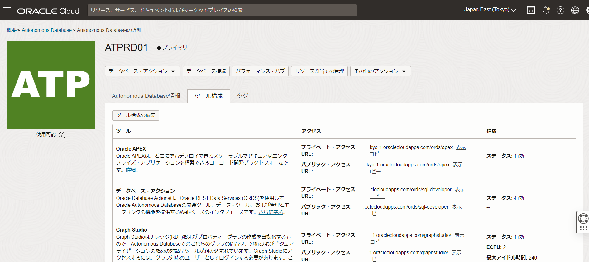
例えばローカルからDatabase Actionsへパブリック・アクセスしてみます。
ADBの詳細画面の[ネットワーク]のパブリック・アクセスの編集ボタンをクリックします。
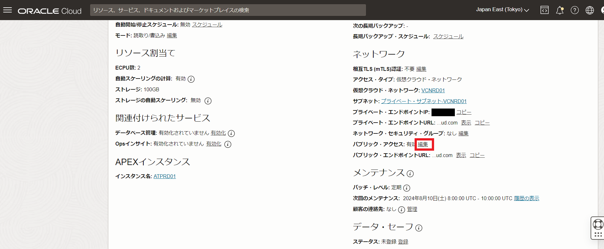
アクセス制御ルールの追加をクリックし、自分のIPアドレスを追加をクリックします。現在ローカルで使用しているIPが追加されます。
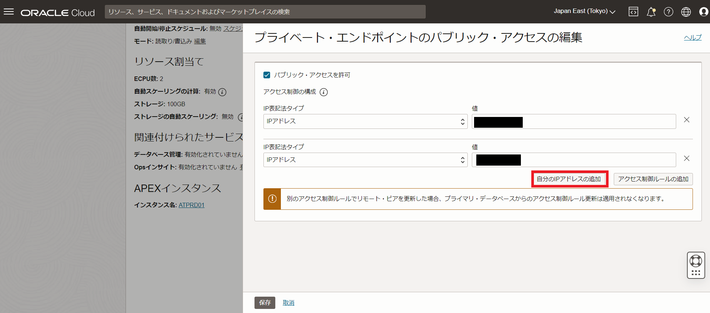
これでローカルからADBのパブリック・エンドポイントへのアクセスが許可されました。
パブリック・アクセスを許可すると、ADBの詳細画面のデータベース・アクションが以下のような表示になっています。このような表示になっておらず、クリックしてもプライベートIPでのアクセスURLしか表示されない場合は少し時間を置くか、ブラウザのリフレッシュを行ってください。クリックするとパブリック・エンドポイントのデータベース・アクションが起動します。
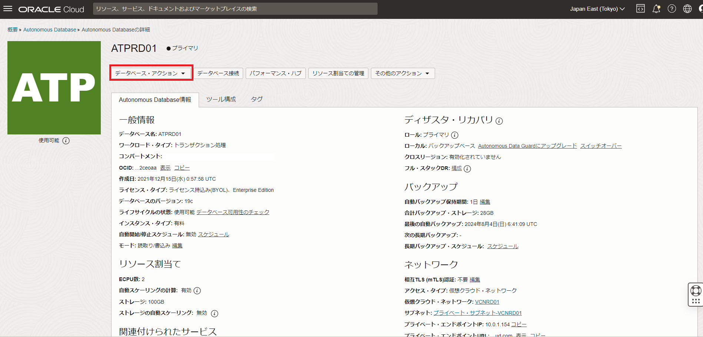
このようにデータベース・アクションの起動パッド画面になりました。
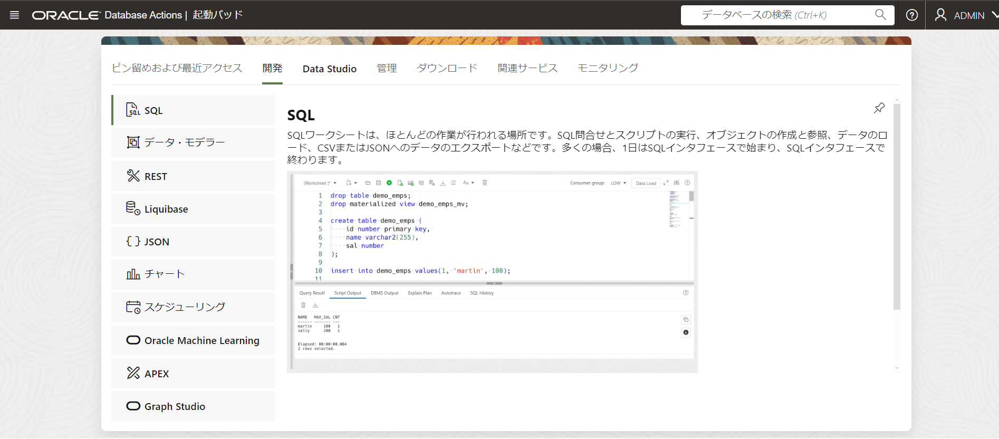
このようにプライベート・エンドポイントのADBでも、ローカルのIPをアクセス制御リストで許可することで、データベース・アクションへパブリック・アクセスすることができます。
2-3. プライベート・エンドポイントでプライベート・ネットワークから接続
オンプレミスのデータセンターなどからプライベート・ネットワークでDatabase Actionsに接続する場合です。 この場合、FastConnectを使用して、オンプレミスからOCIのVCNに接続する方法が一般的です。なお、トラフィックはインターネットを経由しません。 詳しい手順については、マニュアルをご参照ください。
参考資料
以上で、この章は終了です。
次の章にお進みください。